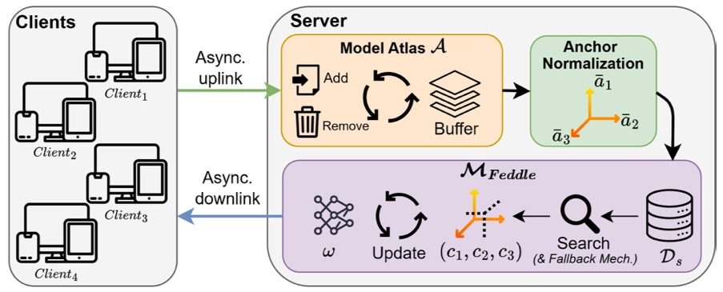

Guided Model Merging for Hybrid Data Learning: Leveraging Centralized Data to Refine Decentralized Models
WACV 2025IEEE/CVF Winter Conference on Applications of Computer Vision

In brief
Real-world data availability is often hybrid: abundant decentralized data on client devices plus a smaller curated centralized set at the server. This framework builds a model atlas from decentralized models and uses the centralized data to refine a global model within that structured space — combining federated learning with model merging, with provably faster convergence and robustness to domain gaps and noisy decentralized data.
Key takeaways
- Formalizes the hybrid data regime, where decentralized data is abundant but heterogeneous and communication-constrained, while centralized data is limited but curated and high-throughput.
- Constructs a model atlas from decentralized models; centralized data guides refinement of the global model within this space, and the refined model reinitializes the decentralized models.
- Provably faster convergence than purely decentralized training, due to variance reduction in the merging process.
- Consistently outperforms purely centralized, purely decentralized, and existing hybrid-adaptable methods.
- Unlike most merging approaches, the framework allows negative merging coefficients and caches asynchronously received client updates in a buffer, with mechanisms to identify and drop low-quality updates.
- Remains robust when the centralized and decentralized data domains differ or when decentralized data is noisy.
Abstract
Current network training paradigms primarily focus on either centralized or decentralized data regimes. However, in practice, data availability often exhibits a hybrid nature, where both regimes coexist. This hybrid setting presents new opportunities for model training, as the two regimes offer complementary trade-offs: decentralized data is abundant but subject to heterogeneity and communication constraints, while centralized data, though limited in volume and potentially unrepresentative, enables better curation and high-throughput access. Despite its potential, effectively combining these paradigms remains challenging, and few frameworks are tailored to hybrid data regimes. To address this, we propose a novel framework that constructs a model atlas from decentralized models and leverages centralized data to refine a global model within this structured space. The refined model is then used to reinitialize the decentralized models. Our method synergizes federated learning (to exploit decentralized data) and model merging (to utilize centralized data), enabling effective training under hybrid data availability. Theoretically, we show that our approach achieves faster convergence than methods relying solely on decentralized data, due to variance reduction in the merging process. Extensive experiments demonstrate that our framework consistently outperforms purely centralized, purely decentralized, and existing hybrid-adaptable methods. Notably, our method remains robust even when the centralized and decentralized data domains differ or when decentralized data contains noise, significantly broadening its applicability.
BibTeX
@inproceedings{zhu_feddle,
title = {Guided Model Merging for Hybrid Data Learning: Leveraging Centralized Data to Refine Decentralized Models},
author = {Zhu, Junyi and Yao, Ruicong and Ceritli, Taha and Ozkan, Savas and Blaschko, Matthew B. and Noh, Eunchung and Min, Jeongwon and Jung Min, Cho and Ozay, Mete},
year = {2025},
booktitle = {IEEE/CVF Winter Conference on Applications of Computer Vision},
url = {https://arxiv.org/abs/2503.20138},
}